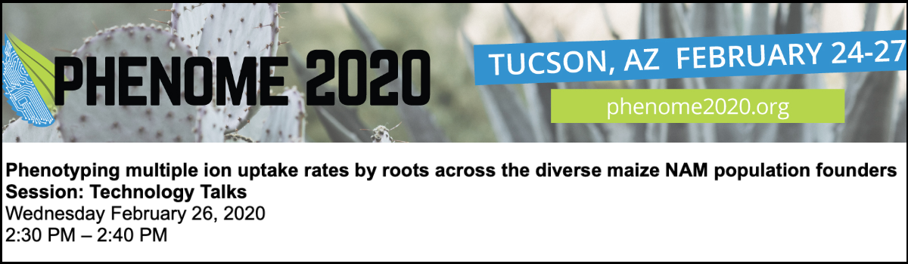
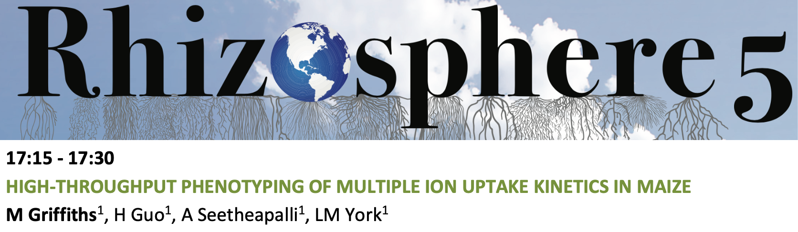
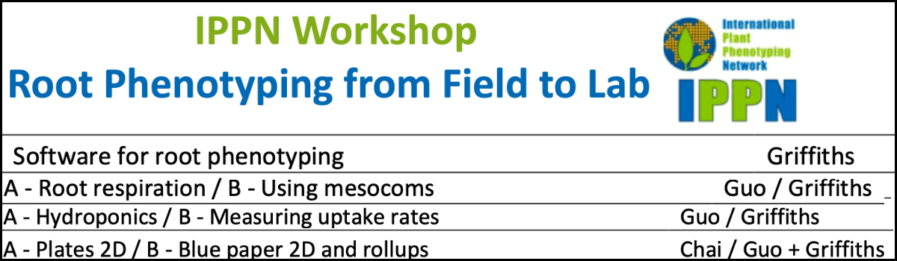

Presentations / Conferences
Where I'm going
2024 ASPB Plant Biology 2024 Extended Harnessing root rhizosphere traits for synthetic biology enabled climate smart crop solutions, Virtual. Invited speaker. [Presentation].
2024 iPREP/iPREFER Annual Meeting 2024, Illinois State University. [Presentation].
Where I've been
2024 IPPS 2024. Evaluation of root system architecture diversity in field pennycress (Thlaspi arvense L.) and genetic dissection using genome-wide association mapping studies Invited speaker. [Presentation].
2024 Washington University in St. Louis, MO, US. Griffiths M, Topp CN. BIOL5702 class series. [Guest lecturer].
2023 iPREP/iPREFER Annual Meeting, University of Minnesota. Root adaptive responses for improvement of abiotic stress tolerance in Pennycress. [Poster].
2023 iPREP seminar series, Virtual. Root adaptive responses for improvement of abiotic stress tolerance in Pennycress. [Presentation].
2023 NAPPN 2023, DDPSC, MO. Temporal analysis reveals diverse root system architecture and development differences among pennycress accessions to nitrate nutrition (Thlaspi arvense L.). Griffiths M, Liu AE, Parker T, Gunn S, Mutan N, Morales E, Topp CN. Invited speaker. Presentation].
2023 North American Plant Phenotyping Root phenotyping workshop NAPPN. DDPSC, MO. Softwares & tools for image-based root phenotyping Workshop organiser
[Presentation]. figshare. https://doi.org/10.6084/m9.figshare.22096436.v1
2023 2023 Biological Systems Science Division Genomic Science Program (GSP) and Bioimaging Science Program (BSP) Annual Principal Investigator (PI) Meetings. A Temporal Analysis and Response to Nitrate Availability of 3D Root System Architecture in Diverse Pennycress (Thlaspi arvense L.) Accessions. Poster presenter.
[Poster].
2023 Washington University in St. Louis, MO, US. Griffiths M, Topp CN. (1) Introduction to root bioogy and phenotyping, (2) Introduction to root imaging, (3) Analysis of phenotyping data in R - BIOL5702 class series.
[Guest lecturer].
2022 iPREP/iPREFER Annual Meeting, DDPSC. Root adaptive responses for improvement of abiotic stress tolerance in Pennycress.
[Presentation].
2022 NAPPN 2022, Athens, GA, US. Root adaptive responses for improvement of abiotic stress tolerance in Pennycress. Fast forward talk.
[Presentation].
2022 2022 Biological Systems Science Division Genomic Science Program (GSP) and Bioimaging Science Program (BSP) Annual Principal Investigator (PI) Meetings. Root adaptive responses for improvement of abiotic stress tolerance in Pennycress. Poster presenter.
[Presentation].
2021 ISRR/Rooting 2021, Columbia Missouri/Nottingham UK Virtual. A 3D Print Repository for Plant Phenomics Griffiths M. Lightning talk.
[Presentation]. figshare. https://doi.org/10.6084/m9.figshare.16632664.v1
2020 Phenome2020, Arizona, US. Phenotyping multiple ion uptake rates by roots across the diverse maize NAM population founders Griffiths M, Guo H, Seethepalli A, Dhakal D, York LM. Invited speaker.
[Presentation]. figshare. https://doi.org/10.6084/m9.figshare.13515866.v1

2020 Texas Women's University, Denton, TX, US. Griffiths M, Roy, S. Introduction to plant phenotyping - Biotechnology Undergraduate course.
[Guest lecturer]. figshare. https://doi.org/10.6084/m9.figshare.11877852.v1
2019 Noble Seminar series, Noble Research Institute, OK, US. Griffiths M, Guo H, Seethepalli A, Dhakal D, York LM. RhizoFlux: Phenotyping of multiple ion uptake rates in NAM founder lines.
[Presentation].
2019 Rhizosphere 5, Saskatoon, Ca. High-throughput phenotyping of multiple ion uptake kinetics in maize. Invited Speaker.
[Presentation] 
2019 International Plant Phenotyping Root workshop IPPN. Noble Research Institute, OK, US. Softwares & tools for image-based root phenotyping Invited Speaker & Workshop Co-organiser Seedling hydroponics / Root respiration / Measuring nutrient uptake rates.
[Presentation / Workshop organizer]. figshare. https://doi.org/10.6084/m9.figshare.11921244.v1

2019 Phenome2019, Arizona, US. Griffiths M, Guo H, Seethepalli A, York LM. Developing a high-throughput phenotyping platform for multiple ion uptake kinetics.
[Poster]
2018 Noble Seminar series, Noble Research Institute, OK, US. Griffiths M, Guo H, Seethepalli A, York LM. Developing a high-throughput phenotyping platform for multiple ion uptake kinetics.
[Presentation]
2018 NIEHS Postdoc Career Development Symposium, Research Triangle Park, North Carolina.
2017 SEB Gothenburg. Gothenburg, Swedish Exhibition & Congress Centre.
2016 4th International Plant Phenotyping IPPN Symposium. CIMMYT El Batán, MX. Griffiths M, Atkinson JA, Mooney SJ, Bennett MJ, Wells DM. Identifying wheat root traits and regulatory genes that control nitrogen uptake efficiency.
[Poster]
2016 Tomography for Scientific Advancement Symposium. University of Bath, UK. Griffiths M, Atkinson JA, Mooney SJ, Bennett MJ, Wells DM. X-ray Computed Tomography for non-invasive visualisation of root system architecture and root growth in soil.
[Lightning talk & poster]
2016 UK Plant Phenotyping Root Phenoptying Workshop. University of Nottingham, UK.
2014 Society for Experimental Biology Annual Main Meeting. University of Manchester, UK. Griffiths M, Atkinson JA, Mooney SJ, Bennett MJ, Wells DM. Identifying wheat root traits and regulatory genes for nitrogen uptake efficiency (NUpE).
[Lightning talk & poster]
2014 Rhizosphere seminar speaker. University of Nottingham, UK. Griffiths M, Keating S, Thompson M, Johnson J, Kory J. FUTUREROOTS: Redesigned root system architecture for improved crop performance.
[Presentation]